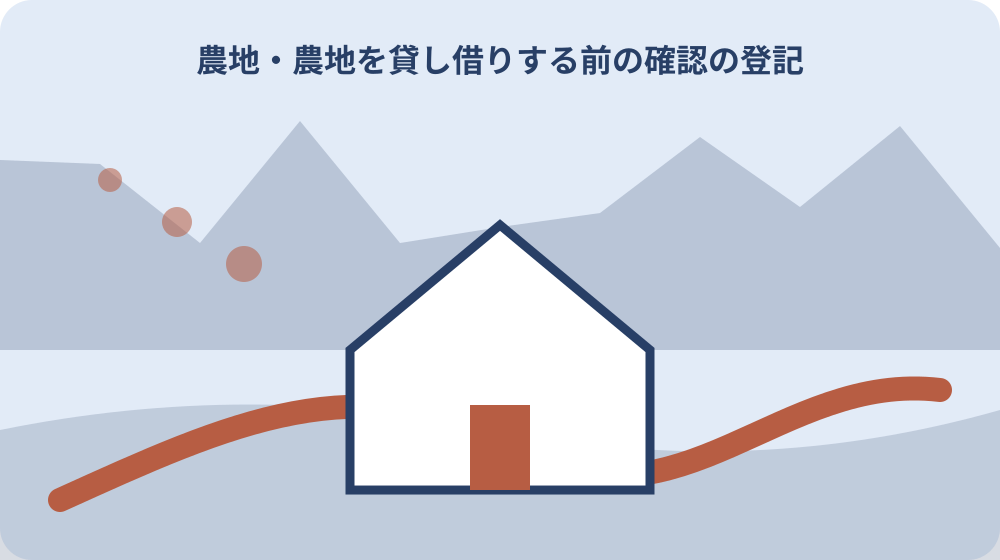

先に答えを確認する
農地を貸し借りする前の確認では地番と登記地目を同じ欄に書いてよいですか。同じ欄にまとめません。森町公式主資料の表記を保ったまま、地番と登記地目を別欄にし、出典URLと確認日を添えます。
農地を貸し借りする前の確認の二つの森町公式資料で記載が違うときはどうしますか。対象年度、対象地域、資料の更新日、現況の定義を比べます。解消しない場合は両URLを示して所管へ確認し、回答日を記録します。
農地を貸し借りする前の確認の所有者・耕作者が分からないまま記録を作れますか。未確認と明記して作れます。ただし面積を推測で埋めず、確認先、次の担当、再確認日を同じ欄に残します。
農地を貸し借りする前の確認はいつ再確認すべきですか。申請、契約、訪問、家族への引継ぎなど実行直前です。現況と進入路と相談日が前回確認時から変わっていないか、公式資料と当事者情報を再確認します。
農地を貸し借りする前の確認で地番と登記地目を混ぜない
森町の農地賃貸で先に確認することを知りたいなら、農地を貸し借りする前の確認から確認します。結論を急ぐ前に、誰の、どの場所の、いつの話かを書き出すと、別の制度や別年度の案内を混ぜにくくなります。
農地を貸し借りする前の確認に関して、農地を貸し借りする前の確認の公式資料から読める要点は次のとおりです。「森町で農地を貸し借りする前の確認｜耕作目的と手続き」の確認対象は、地番と登記地目を別項目として記録する実務であり、一方から他方を推定しない。ただし、ページの更新日と適用日、実施日、書類の有効期間は同じとは限りません。
農地を貸し借りする前の確認で地番と登記地目を混ぜないを整理する段階では、農地を貸し借りする前の確認を起点に地目・耕作者・権利・水路管理を分ける順序で進めます。分からない項目を推測で埋めず、確認先と期限を決める方が手戻りを減らせます。
農地を貸し借りする前の確認の現況を森町公式主資料から転記する
農地を貸し借りする前の確認の現況を森町公式主資料から転記するは、耕作目的と手続きの資料を集めるだけの作業ではありません。今決められることと、現地や窓口でなければ決められないことを分ける作業です。
農地を貸し借りする前の確認で耕作目的と手続きの判断材料になる公表事項は、農地を貸し借りする前の確認では、現況を資料の更新日と混同せず、対象となる日付・年度として転記する。検索結果の短い説明ではなく、本文の対象者、場所、日付、例外まで確認し、ページ名と確認日を記録します。
農地を貸し借りする前の確認の現況を森町公式主資料から転記するについて森町で注意する条件は、森町内でも面積が異なれば条件が変わるため、対象住所・地番・施設を特定せず町全体の説明を個別案件へ当てはめない。耕作目的と手続きを家族へ伝えるときも、結論だけでなく未確認事項を添えてください。
農地を貸し借りする前の確認の所有者・耕作者を補完資料で照合する
ここでは、農地を貸し借りする前の確認の所有者・耕作者を補完資料で照合するのうち森町の農地賃貸で先に確認することを知りたいを扱います。森町農業委員会と農地制度の所管情報の役割を分け、同じ言葉でも担当範囲が同じかを確かめます。
農地を貸し借りする前の確認における森町の農地賃貸で先に確認することを知りたいの確認の土台は、所有者・耕作者は面積だけから断定できないため、森町公式の補完資料または担当窓口で照合する。この内容が当てはまるとは限らないため、住所、対象者、実行日を添えて担当窓口へ照会します。
農地を貸し借りする前の確認の所有者・耕作者を補完資料で照合するの実行前メモには、森町の農地賃貸で先に確認することを知りたいを含め、確認済み、未確認、対象外の三欄を作ります。実行・申請・訪問の直前に現況と進入路と相談日を森町の所管窓口または当事者へ再確認する。保留事項にも次の担当と再確認日を付けます。
農地を貸し借りする前の確認の面積を一件に特定する
農地を貸し借りする前の確認の面積を一件に特定するでは、特に問いの範囲を確かめます。「森町の農地賃貸で先に確認することを知りたい」という問いに答えるには、地番・現況・進入路と相談日を同じ確認記録へ結び付ける必要がある。資料の対象と自分の住所、立場、予定日が一致するかを読み、当てはまらない条件は未確認のまま残します。
農地を貸し借りする前の確認のうち問いの範囲について森町で実際に動く際は、森町公式主資料の地番と補完資料の登記地目を別々に確認し、それぞれの確認日を残す。条件が違えば必要な資料や相談先も変わります。町全体の説明を個別の答えへ置き換えないことが大切です。
農地を貸し借りする前の確認の面積を一件に特定するを尋ねる窓口へは、問いの範囲と地番、地目、耕作状況、権利者を一枚にして持参します。質問は「できるか」だけで終わらせず、根拠資料、次の部署、再確認時期まで聞けば、家族へ正確に共有できます。
農地を貸し借りする前の確認で地番の定義が資料間で違うときの止め方
森町の農地賃貸で先に確認することを知りたいなら、公式資料の位置付けから確認します。結論を急ぐ前に、誰の、どの場所の、いつの話かを書き出すと、別の制度や別年度の案内を混ぜにくくなります。
農地を貸し借りする前の確認に関して、公式資料の位置付けの公式資料から読める要点は次のとおりです。森町公式の主資料と補完資料は別URLで公開されており、2026年8月9日に両方のHTTP 200応答を確認した。ただし、ページの更新日と適用日、実施日、書類の有効期間は同じとは限りません。
農地を貸し借りする前の確認で地番の定義が資料間で違うときの止め方を整理する段階では、公式資料の位置付けを起点に地目・耕作者・権利・水路管理を分ける順序で進めます。分からない項目を推測で埋めず、確認先と期限を決める方が手戻りを減らせます。
農地を貸し借りする前の確認の登記地目に旧表記・略称がある場合の残し方
農地を貸し借りする前の確認の登記地目に旧表記・略称がある場合の残し方は、資料Aの読み方の資料を集めるだけの作業ではありません。今決められることと、現地や窓口でなければ決められないことを分ける作業です。
農地を貸し借りする前の確認で資料Aの読み方の判断材料になる公表事項は、農地を貸し借りする前の確認の制度・分類の上位枠は所管機関の公式資料で照合し、森町の個別運用を国・県の一般説明だけで決めない。2026年8月9日に参照先のHTTP 200応答を確認した。検索結果の短い説明ではなく、本文の対象者、場所、日付、例外まで確認し、ページ名と確認日を記録します。
農地を貸し借りする前の確認の登記地目に旧表記・略称がある場合の残し方について森町で注意する条件は、実行・申請・訪問の直前に現況と進入路と相談日を森町の所管窓口または当事者へ再確認する。資料Aの読み方を家族へ伝えるときも、結論だけでなく未確認事項を添えてください。
農地を貸し借りする前の確認の現況とウェブページ更新日を取り違えない
ここでは、農地を貸し借りする前の確認の現況とウェブページ更新日を取り違えないのうち資料Bの読み方を扱います。森町農業委員会と農地制度の所管情報の役割を分け、同じ言葉でも担当範囲が同じかを確かめます。
農地を貸し借りする前の確認における資料Bの読み方の確認の土台は、「森町で農地を貸し借りする前の確認｜耕作目的と手続き」の確認対象は、地番と登記地目を別項目として記録する実務であり、一方から他方を推定しない。この内容が当てはまるとは限らないため、住所、対象者、実行日を添えて担当窓口へ照会します。
農地を貸し借りする前の確認の現況とウェブページ更新日を取り違えないの実行前メモには、資料Bの読み方を含め、確認済み、未確認、対象外の三欄を作ります。森町公式主資料の地番と補完資料の登記地目を別々に確認し、それぞれの確認日を残す。保留事項にも次の担当と再確認日を付けます。
農地を貸し借りする前の確認で所有者・耕作者が未確認のときに尋ねる担当
農地を貸し借りする前の確認で所有者・耕作者が未確認のときに尋ねる担当では、特に第三資料との照合を確かめます。農地を貸し借りする前の確認では、現況を資料の更新日と混同せず、対象となる日付・年度として転記する。資料の対象と自分の住所、立場、予定日が一致するかを読み、当てはまらない条件は未確認のまま残します。
農地を貸し借りする前の確認のうち第三資料との照合について森町で実際に動く際は、森町内でも面積が異なれば条件が変わるため、対象住所・地番・施設を特定せず町全体の説明を個別案件へ当てはめない。条件が違えば必要な資料や相談先も変わります。町全体の説明を個別の答えへ置き換えないことが大切です。
農地を貸し借りする前の確認で所有者・耕作者が未確認のときに尋ねる担当を尋ねる窓口へは、第三資料との照合と地番、地目、耕作状況、権利者を一枚にして持参します。質問は「できるか」だけで終わらせず、根拠資料、次の部署、再確認時期まで聞けば、家族へ正確に共有できます。
農地を貸し借りする前の確認の面積を家族へ渡す記録様式
森町の農地賃貸で先に確認することを知りたいなら、の生活への影響から確認します。結論を急ぐ前に、誰の、どの場所の、いつの話かを書き出すと、別の制度や別年度の案内を混ぜにくくなります。
農地を貸し借りする前の確認に関して、の生活への影響の公式資料から読める要点は次のとおりです。所有者・耕作者は面積だけから断定できないため、森町公式の補完資料または担当窓口で照合する。ただし、ページの更新日と適用日、実施日、書類の有効期間は同じとは限りません。
農地を貸し借りする前の確認の面積を家族へ渡す記録様式を整理する段階では、の生活への影響を起点に地目・耕作者・権利・水路管理を分ける順序で進めます。分からない項目を推測で埋めず、確認先と期限を決める方が手戻りを減らせます。

農地を貸し借りする前の確認の進入路と相談日を写真・図面・書類へ結び付ける
農地を貸し借りする前の確認の進入路と相談日を写真・図面・書類へ結び付けるは、地区差の確認の資料を集めるだけの作業ではありません。今決められることと、現地や窓口でなければ決められないことを分ける作業です。
農地を貸し借りする前の確認で地区差の確認の判断材料になる公表事項は、「森町の農地賃貸で先に確認することを知りたい」という問いに答えるには、地番・現況・進入路と相談日を同じ確認記録へ結び付ける必要がある。検索結果の短い説明ではなく、本文の対象者、場所、日付、例外まで確認し、ページ名と確認日を記録します。
農地を貸し借りする前の確認の進入路と相談日を写真・図面・書類へ結び付けるについて森町で注意する条件は、森町公式主資料の地番と補完資料の登記地目を別々に確認し、それぞれの確認日を残す。地区差の確認を家族へ伝えるときも、結論だけでなく未確認事項を添えてください。
「森町の農地賃貸で先に確認することを知りたい」を確認済みと判断する条件
ここでは、「森町の農地賃貸で先に確認することを知りたい」を確認済みと判断する条件のうち家族に残す記録を扱います。森町農業委員会と農地制度の所管情報の役割を分け、同じ言葉でも担当範囲が同じかを確かめます。
農地を貸し借りする前の確認における家族に残す記録の確認の土台は、森町公式の主資料と補完資料は別URLで公開されており、2026年8月9日に両方のHTTP 200応答を確認した。この内容が当てはまるとは限らないため、住所、対象者、実行日を添えて担当窓口へ照会します。
「森町の農地賃貸で先に確認することを知りたい」を確認済みと判断する条件の実行前メモには、家族に残す記録を含め、確認済み、未確認、対象外の三欄を作ります。森町内でも面積が異なれば条件が変わるため、対象住所・地番・施設を特定せず町全体の説明を個別案件へ当てはめない。保留事項にも次の担当と再確認日を付けます。
大石の視点：農地を貸し借りする前の確認は結論より先に地番を記録する
大石の視点：農地を貸し借りする前の確認は結論より先に地番を記録するでは、特に大石の視点を確かめます。農地を貸し借りする前の確認の制度・分類の上位枠は所管機関の公式資料で照合し、森町の個別運用を国・県の一般説明だけで決めない。2026年8月9日に参照先のHTTP 200応答を確認した。資料の対象と自分の住所、立場、予定日が一致するかを読み、当てはまらない条件は未確認のまま残します。
農地を貸し借りする前の確認のうち大石の視点について森町で実際に動く際は、実行・申請・訪問の直前に現況と進入路と相談日を森町の所管窓口または当事者へ再確認する。条件が違えば必要な資料や相談先も変わります。町全体の説明を個別の答えへ置き換えないことが大切です。
大石の視点：農地を貸し借りする前の確認は結論より先に地番を記録するを尋ねる窓口へは、大石の視点と地番、地目、耕作状況、権利者を一枚にして持参します。質問は「できるか」だけで終わらせず、根拠資料、次の部署、再確認時期まで聞けば、家族へ正確に共有できます。
大石の視点と次の一歩
森町で農地を貸し借りする前の確認｜耕作目的と手続きについて、私は結論を急ぐより、分かっている事実と未確認事項を分けることを優先します。特に農地を貸し借りする前の確認を先に確かめ、申請や契約を最初の行動にしない方が選択肢を守れます。
農地を貸し借りする前の確認では、森町内の地区による移動、道路、周辺施設、土地の使われ方の違いも確認します。現地を見ていない内容を体験談のように語らず、地番、地目、耕作状況、権利者を公式資料と照合してください。
農地を貸し借りする前の確認について今日できることは、耕作目的と手続きに関係する一次情報を一件開き、自分に当てはまる条件へ印を付けることです。資料名、部署名、確認日、残った疑問を記録します。
農地を貸し借りする前の確認のうち森町の農地賃貸で先に確認することを知りたいが対象外なら、その理由も記録します。対象外と未確認を分けておけば、条件が変わったときに必要な箇所だけ確認し直せます。
実行前の確認メモ
農地を貸し借りする前の確認の確認表には、農地を貸し借りする前の確認、公式ページ名、確認日、対象となる住所や人、予定日、問い合わせ先を書きます。目的が広がった場合は欄を分けます。
農地を貸し借りする前の確認で耕作目的と手続きの資料を家族へ渡す際は、まだ分からない点も示します。農地の情報は年度や個別条件で変わるため、確認日を付けます。
農地を貸し借りする前の確認のうち森町の農地賃貸で先に確認することを知りたいの予定は、資料を集める日、窓口へ確認する日、現地を見る日、最終判断をする日に分けます。回答待ちの時間も含めます。